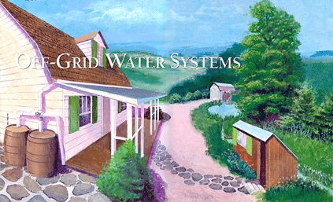
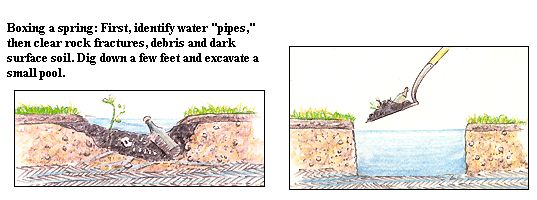
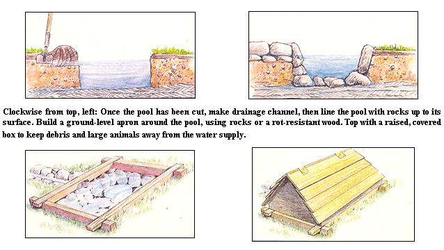
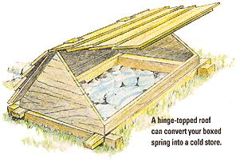
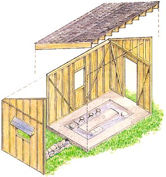
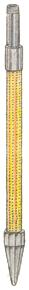
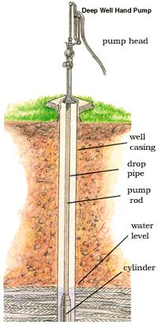
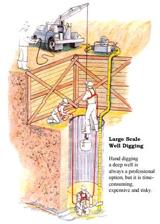

Off-Grid Water Systems
Our three-part special on taking charge of your own water systems begins with a complete tour of homesteading water possibilities, from catching rainwater in arid climates to digging deep wells to tapping freshwater springs. PLUS! how to build an old-fashioned springhouse.
By John Vivian
June/July 2000
I'm going out to clean the pasture spring
I'll only stop to rake the leaves away
(And wait to watch the water clear, I may):
I shan't be gone long. - You come too
Robert Frost: The Pasture
Waylaying a flowing spring and running it through a homestead is a minor hitch in the cycle compared to humankind's truly heroic efforts. We all know of world water misallocation and pollution problems (and must cheer such progress as the cleanup of the Cuyahoga, Hudson and many other formerly toxic water sources). But despite scattered improvements, our environmental transgressions over the years are beginning to have damaging effects on nature. Too often, surface and groundwater must flow through wars, famines, dumps and dunghills and be diverted to carry away the poison effluent of an increasingly industrialized, urbanized and overpopulated human society.
To do our bit, we need to provide working examples of action in progress by adopting water-conserving policies on our own country places. These policies should be as stringent as any organic gardening practice aimed at conserving and rebuilding topsoil (feeding the land, for example, with composted plant materials, rather than feeding the plants with chemicals). We should determine to:
1. Tap into the water cycle as soon as possible in its trip from the clouds to the ocean deeps, leaving the deeper aquifers to farms, industries and urban centers not as fortunate as we to be able to tap in early.
2. Divert as little water as possible from the natural water-cycle processes - only so much as is needed for a healthy, clean and sustainable lifestyle.
3. Minimize our own water contamination by doing our best to assure that when water leaves our place, it is as clean (or cleaner if we inherit pollution from another source) as when we got it.
But before you can conserve water, you gotta find it.
Finding Water
The conventional way to supply water to a country place is to bring in a huge drilling rig to raise a derrick and sink a 250'-deep or greater, 6"- or 8"-diameter well to an aquifer so far below the surface it cannot be contaminated by any surface life. Then bury a 3,000- to 5,000-gallon septic tank with a 100', multiple-pipe leach field to drain partially treated effluent into the groundwater. Then build a house that uses a conventional water-carry system to drain harmless effluent (from clothes and dishwashers, baths and showers, kitchen sink, dog and car washes, and rain from the driveway) and contaminate it with just a few ounces of bacteria-packed, potentially disease-carrying human waste. This insignificant amount of waste renders hundreds of gallons of water unusable each day.
It is not necessary to squander so much drinking water when we can get by with less. A more conservative water supply of as little as five gallons a day can serve a household and eliminate the need to waste the thousands of dollars it takes to tap a deep aquifer and to treat a whole-house, water-carry disposal system.
If you are so fortunate as to live on a lake, pond or year-round flowing stream, you can take your water from there by gravity, gravity/siphon or with a pump powered by hand, wind, water or engine.
Springs
A spring is an upwelling that reveals itself at the surface. It can occur as shallow seepage from a nearby lake or stream (or a neighbor's overloaded cesspool or hog-lot manure lagoon), from an underground stream or unorganized water migration through the soil (or leakage from a distant toxic waste dump), or as artesian flow from a deep aquifer. You won't know until you have the water tested at a lab. In relatively unpopulated countryside, all water should test out fine. Unless grossly overloaded, natural populations of soil microorganisms expand to do a good job of consuming most natural, organic pollutants within a few months to a year's time. Even overloads can be mitigated, given enough time. (Case in point: Eleven years after the fact, petroleum remaining from the Exxon Valdez crude-oil spill in Alaska's wildlife-rich Prince William Sound is being consumed by bacteria at an unexpectedly rapid rate, and the otters, seals and sea bird populations are beginning to regenerate.) Of course, if the pollutants are constantly resupplied, nature's self-cleansing system can be overwhelmed.
In a heavily populated, industrial or agricultural area, mineral-rich, pesticide/pollutant-free spring water will likely come from deep underground. Presence of E. coli bacteria or phosphates (from detergents) indicates household sewage or septic outflow; solvents come from industrial pollution, pesticides from agriculture. But despite these potential insults, most North American groundwater remains potable; half the population drinks it still.
Look for springs early in the year while they are still (over)flowing from snowmelt or spring rains. Patrol the roads and look for small runnels flowing into roadside ditches. Trace them to their source, then check back monthly even if the running streamlet dries up. If the source area remains marshy till fall, you have a year-round spring.
Walk the woods above the house and trace linear dips in the ground. They may indicate where an underground stream has worn a channel through the soil. Many springs don't flow, but pool out and flood an area to make a minimarsh. If soil around is black and smelly (but not green with algae ...a sign of nutrients, possibly from raw sewage), and if watercress or a few cattails, rushes, reeds, horsetails or other marsh plants grow there, you have a perpetual spring that can be cleaned out, boxed and tapped.
To tap a spring, wait till it is at its driest, usually in the fall before late-season rains begin. Dig out the sulphur-smelling, stagnant black soil and trace water to upflows from "pipes"-vertical channels in the subsoil or cracks in bedrock or tiny rivulets flowing through miniarteries in the subsoil. Cut out marsh soil till you locate where water is springing from clean soil. Then, dig out as large a pool as you want and line it with rocks up to the surface. Build a ground-level apron of concrete, rocks or good rot-resistant wood such as cedar. Build a raised box with a secure top over the spring and dig an outflow to carry excess water where you want it. Cut a channel deep and long enough so that water will leave the area. (see illustrations below).
The boxed spring can be expanded to a covered spring house that will serve as a 40°F refrigerator for much of the year.
Easiest is to extend the spring pool beyond its original one- or two-square-foot area to form a shallow sink, perhaps 6' long by 2' or 3' wide. (Some old-timers sank an old tin stock tank or iron bath tub in the soil.) Dig it so water level stands 1' deep above a flat rock bottom. Cover with heavy (varmint-proof) planks or surround with beams supporting a hinge-topped shed roof and set in watermelons, bottles of milk and other perishables.
More elaborate is to build a stand-up roofed shed over an even larger shallow pool. You will need stone or poured - concrete curbs around the perimeter to contain the water, and flat-topped stepping stones, wood or poured-concrete walkways in the pool to get around with dry feet (see illustration, above right).
Cleaning a spring is a magic chore, particularly in summer and early fall when it plops with frogs and hosts a miniature water world of tadpoles, waterbugs, newts, freshwater shrimp and tiny fish (sculpins or rainbow darters). As you watch the water clear, you can see a lot deeper than the bottom of the spring ...if, like Frost, you are inclined to look beyond the surface of things.
Springs can be tapped by the bucketful for household use. If located above the house, spring water can be run through pipes in a gravity-flow system to a cistern, an elevated water tank or a font inside the house (and from its drain back out to the streambed), providing indoor plumbing under even the most rustic off-grid conditions. If spring and pipes are insulated with earth or hay bales, and the spring is let flow full-time, a gravity spring can supply water to the house through the winter in even the coldest climates. Flow friction heated water will not freeze up unless temperatures stay well below 0°F for days at a time. You'll have to design your own spring-fed system, following local topography, but the illustrations on these pages will give you a head start.
Wells
If land is high enough or the local area dry enough that springs and water bodies are not in evidence, you must dig down to the local water table - the level below ground where soil and rock is saturated with water. You may have to dig down to an aquifer - a layer of gravel or porous rock that carries a vein of water through an otherwise relatively dry topography.
Asking around neighboring farms and old homes will reveal the best well-drilling strategy for the local geology. You are in luck if your land overlays a shallow (15'- to 22'-deep) water table and a deep loam/clay or sand/clay soil containing few large rocks and no solid rock formations for many hundreds of feet down.
You can sink a pipe well by hand. Locate the well as near the house as possible to reduce length of draw (and thus the work your pumping arm or an electric pump must do to get water into the house). Make sure the site is at least 100' from and uphill of a privy, animal lot or septic system outflow.
Simplest is to get (from a hardware store or one of the homestead suppliers listed in Sources) a well point - a 4' length of 1 "-, 2"- or 3"-diameter steel pipe with a hardened point and hollow interior. At the bottom is a brass screen covering holes drilled into the interior hollow core. The drill point is abandoned, and the pipe serves as well casing when it reaches depth. Thread a soft-metal hammering cap on the up-end of the pipe and simply bull it down into the soil with a maul. The cap is removed and new sections of pipe screwed on tight with a pair of large monkey wrenches and a little nontoxic plumber's joint compound in the threads as the well point goes down. Some soils will let you hammer in a complete well. If artesian pressure below ground is sufficient, the well may begin to produce water by itself, prompting a "gusher" through the drill pipe at the wellhead. Otherwise, screw on a pump fitting and attach a suction pump to see if you have water.
If the going gets rough, you can attach a garden hose or high-pressure pump to the wellhead and force water into the hole. It will flow out of the point and into the soil, soaking and loosening it and carrying loose spoil to the surface just like a professional drilling rig.
A cut above a driven-point well is a bored well. You can find huge hand-turned earth augers with a pile of rusty drive-rod extensions at farm antique sales. But it takes a lot of drive rod, muscle and determination to bore a well. You must drill down a foot or so, pull the auger by hand, levers or a winch, dump the spoil and go back down again; otherwise loose spoil can lodge in the bore above the auger and you'll have to reverse-drill out and redrill back in again. When water is reached, the ground softens, drilling becomes easier and spoil becomes moist, then wet. Usually, the bore is extended 6' into the water-bearing material to provide a sump or reservoir. Then, the auger is pulled and lengths of hollow pipe casing - threaded at both ends,with sections joined by a threaded nipple - go into the hole to prevent collapse. Your choice of pump is attached at the surface. Easiest is to connect pump to well through black plastic semi-flex pipe with a spring-loaded footvalve on the well end. The valve opens when suction is applied to let water in, and closes after the stroke to keep it in. In the old days, a tall standing pitcher pump was fitted atop a wooden platform built over the well. In more modern homes, the pump was moved to the kitchen counter beside the sink. My grandmother and great-aunts all had them a good 50 years after municipal water lines had been installed.
You can use power to sink an auger well by investing in a Deep-Rock(restricted)-type well driller. Using a posthole-auger power head with a geared-down gas engine on a miniature derrick, and a portable high-pressure pump to send spoil-clearing water into the bore, it drills like a mini-oil rig and can do a fine job to reasonable depths in soil that's free of hard rocks.
Cost is about the same as a drilled well, but you can use it to sink wells for all the neighbors and make money doing it.
Do not expect to use a suction pump to draw water that is farther down than 22'. At just over 21', the force of gravity overwhelms the vacuum that a surface-located pitcher pump can generate. For deeper wells you will need a submerged push-type pump that can be operated by motor or windmill. This arrangement will pull water up from as deep as 600'. Below that you need a submerged jet pump, which will demand electricity.
Since the abortive Y2K scare, several catalogs have begun featuring hand-lever-operated pumps that can be lowered into drilled well casings - sometimes without your having to remove the submerged electric pump. Hand-pumping water from several hundred feet down would take a lot of time and muscle, and we'd prefer using a portable electric generator to power the submerged pump. It's good to know that if the fuel runs out, you can still access the water table.
Catalogs also sell long, tubular stenciled-tin "drilled-well buckets" with a spring-loaded, in-only flapper valve at the bottom. Lowered on long ropes, they can get water out of drilled-well casings. And they make neat decorations on the barn wall when not in use. You'll find them for selling for just around $50 (rope and arm muscle not included).
Modified well buckets can maximize water draw from narrow wells.
The old-time way to sink a well was to hand-dig a 3'- to 4'-wide shaft and build a roofed wishing well with a bucket on a windlass over it. A raised platform or curb was built to cover the open pit, and a box built on that to prevent fall-ins. Ancient civilizations hand-dug wells hundreds of feet deep, and there are reports of 70' bucket wells in some parts of North America. However, hand-dug wells are most practical for under-22' water tables in firm and undisturbed soils.
Collapse of the shaft on the miner is always a possibility; hand-well digging should not be attempted by a novice. You need someone in attendance who knows what's underground in your area, plus well-conditioned shovelers and a big windlass over the hole to bring up buckets of spoil and to raise and lower the miners. A crane can be used to lower a simple miner's caisson, made from sections of corrugated water conduit, down around the diggers to protect them from cave-ins. Diggers have to scratch out circumferential soil from under the tube's lower margin - not easy work.
Components for wells drawing from less than 200' can be operated by hand.
Catchments
Catchments of many kinds are used to capture and hold rainwater in areas of low rainfall, where wells are difficult to bring in and in parts of the West where water is too deep and/or is contaminated with brine or alkali. Easiest and most common is a big wooden rain barrel, fed from a downspout leading from gutters at the roof eaves. Several firms have begun manufacturing 40- or 50-gallon plastic rain barrels that come with moulded-plastic, roof-cleaner diverters to fit any downspout; the diverters deflect flow till the roof is clean, then are rotated to fill the barrel.
A roof-gathering system can be used to fill buried or above-ground cisterns of any practical size. We know of homes in the naturally fresh-waterless Florida Keys (water from the Everglades is piped all the way to Key West) with precast concrete cisterns that hold 3,000 gallons. They can be filled during a single tropical storm and supply cooking, drinking and wash water for months till the next storm comes along. They are typically fitted with roof-cleaners and a pump.
Inland, too, rain can be caught off roofs or captured from gullies or washes and stored in cisterns or s in dammed reservoirs. Controlling the brief but powerful flood waters and minimizing mud buildup in reservoirs are major problems. Some catchments are lined with mud - reducing sheet plastic, but the sheeting is quickly destroyed by UV rays from the sun. Though this is low-tech water gathering, you're advised to enlist expert assistance, especially if building a dam and impoundment upstream of a town, campground or highway.
Proper terms for the above described methods are "surface water containment," or "rain and storm water harvesting" or "runoff catchments." Unfortunately, written resources are scarce and most are concerned with water supplies for arid outback Australia, ground-waterless ocean islands and desert areas in Third World countries.
Test Before You Taste
In most of rural North America the water will be good, but you must test any wild water before drinking it untreated.
Half of the North American populace drinks surface and groundwater (even though 25% live within a quarter mile of an EPA-recognized toxic dump).
Treat any untested water with iodine tablets or chlorine bleach (1 teaspoon per 10 gallons), or boil it for ten minutes to kill off undesirables, then pour through a PUR(restricted) filter (available at grocery or hardware stores) to eliminate chemicals and hazardous minerals such as mercury, lead and arsenic.
Checking on domestic water safety is your local government's responsibility, and is typically under the purview of your area's public health or zoning authorities. Try your town clerk or go to the county seat and badger the public health office for a government-subsidized test.
If that doesn't work, you can finance your own water tests. Water test kits are available from most of the alternative-energy suppliers that advertise in MOTHER (they act as agents for the same accredited labs used by your extension service). Such tests are conducted by mail, though, and are best for persistent chemical pollutants. The lab must have fresh water for a reliable count of fragile bacteria and unstable chemicals (and it must be no more than 24 hours old to conduct the float test for tiny giardia cysts). The local farm coop or any well driller can aim you toward a nearby testing service, or they may do their own testing. If so, see what they charge. Plan on spending $150 to $250 for a really thorough test.
Our preferred method is to send samples off for chemical-testing, but also to invest in a school microscope, lab manual, slides and petrie dishes, a little agar-agar and a dye kit and do our own testing for bacteria, parasites and other live critters.
One lab that you can deal with directly is Suburban Water Testing Labs, Inc. at www.h2otest.com . It offers a selection of the most popular tests in easy-order kits. You send in an order and a check, and in return receive a sampling kit; you fill the water vials and send them in (follow directions; don't get your fingers in the sample) and the lab immediately responds with test results and recommended cures. For prices ranging from under $100 to $500, Suburban will test for your choice from a long list of troublesome microorganisms, heavy metals, pesticides, solvents and generally harmful chemicals like polyvinyl chlorides (PVCs) and asbestos.
If coliform bacteria (E.coli and others) are detected, you can find out what kind it is for another few dollars. Thousands of species live naturally in soil and water and in the guts of most living creatures. A lab culture will tell if it is a fecal variety from human waste or farm-animal feedlots. E.coli species are usually harmless, but their presence in drinking water is a red alert that human disease organisms might also appear at any time (including newly evolved pathogenic strains of E. coli). Patrol your watershed. You may find a raccoon carcass, bat tree, bear den or a hiker's latrine draining into your spring; remove the polluter and clean up your water. Any source of human coliform found in the water supply should be traced, located and eradicated - a job demanding the resources and enforcement clout of public health offices or your state's EPA.
If faced with an unsolvable problem, you can always drill a deeper well (for $2,500 to $5,000 to start) or have an automatic filtering/chlorine-application system installed at the wellhead (for about $1,000). Or you can install a whole-house water purifying system (see your Yellow Pages) in your cellar. You can also purchase stills or lot purifiers to install on or near drinking water faucets (see catalogs listed under Sources). Select your purifier carefully. Few remove all possible contaminants, so be sure to select one that treats your specific water problems. And know going in that it ain cheap; most high-tech purifiers use electricity, and all require replacement of semi-permeable membranes, filter elements and/or UV-bulb bacteria-killers, plus periodic water tests. Stills are low-tech but effective. They boil water and condense the steam, but demand close attention and stove fuel.
To minimize cost and hassle, we suggest that you test and, if need be, clean up your own water supply. If you get the authorities involved, you can have yourself regulated out of your water source on the whim of some clerk. We know of a small community with 30-year-old water and plumbing systems, where broken underground pipes potentially allow cross-contamination between systems. In a mandatory periodic test, the state found coliform bacteria (of unknown variety and source) in the drinking water and issued a mandatory "boil water" dictate to residents. An automatic chlorinator was installed at the wellhead, but owners failed to hire the right engineer to propitiate the regulators. Thus, the "boil-water" rule is being kept in force till such time that the contamination source can be found and corrected to the bureaucrat's satisfaction (which hasn't happened in a year's time). Park residents complain that the water reeks of chlorine periodically and bleaches everything, but is still officially unsafe. Many are now having to make a large investment in drinking water.
Poor water headaches like this are becoming a standard irritation of living in an increasingly populated countryside - all the more reason, then, to declare independence from county restrictions and find the water you need ... yourself.
Browse through a collectionof our best Do-It-Yourself andBuilding stories. Go to our web site!www.motherearthnews.comnow offers archived articles, an "AskMother" section and more.
Related info:
Water Contaminants To Test For
Sifting Through The Filter Jargon
|
 An expanded spring pool housed in a small shed will provide year-round cooling and storage |
 A modern well point can be driven by hand through relatively loose soil. |
 Modified well buckets can maximize water draw from narrow wells. |
|
 Components for wells drawing from less than 200' can be operated by hand. |
 |
 |
|
 |
|
 |
|
 |
|
|